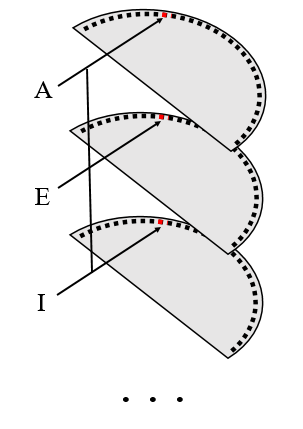
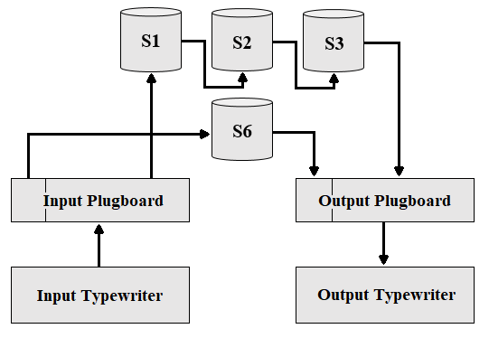

PURPLE
Introduction
PURPLE, also called Angooki Taipu B or "Type B Cipher machine," was a electromechanical cipher machine used by the Japanese diplomatic service during World War II. PURPLE is famous for being the machine used to send the "14 Part Message," a Japanese transmission breaking diplomatic relations with the United States on December 7th, 1941, the morning of the unprovoked bombing of Pearl Harbor.
PURPLE's encryption method was eventually cracked by the US Army's Signal Intelligence Service (SIS) lead by William Friedman. Notable people working on PURPLE included: Frank Rowlett, head of the PURPLE team, Genevieve Grotjan, a cryptographer who first saw the pattern that led to solving PURPLE, and Leo Rosen, an engineer who designed the PURPLE Analog, a device that replicated PURPLE.
Simulator
As a quick test type "NEZEZVEMQD" into the “input” box using the default settings produced by loading the page. If you don't know what's happening, scroll down and read "Technical Details."
Technical Details
The exact details of how the Japanese machine worked mechanically are largely unknown as a whole one was never recovered, so here I describe the operation of the US PURPLE Analog. The course of a letter through PURPLE began at the input typewriter. From there, a letter entered the plugboard. The plugboard consisted of two rows of alphabets: an input and an output. This meant that the A input could come out at B while a B outputted H (as the plugboards of PURPLE and Enigma are commonly compared, please note that they are not the same. Enigma had one alphabet so if A was plugged into B that same wire was also connecting B into A). The outputs of the PURPLE plugboard were split into two groups: the twenties (consonants) and the sixes (vowels, including y), that were then enciphered differently. The input in the sixes would go to a stepping switch, a sketch of one is shown on the right. This stepping switch, also called a uniselector, uniselector switch, or stepping relay, consists of 6 layers with 25 inputs each. The six layers represented the six possible inputs and the 25 inputs per layer all gave different outputs so that the encryption seemed random. The input would be sent to the appropriate layer while the selector part of the switch would line up with a column across one of the 25 inputs, meaning that the input spot would be the same on every level. From the sixes switch a letter would travel to the output plugboard (which was plugged exactly opposite the input plugboard, even though it was theoretically possible to plug it differently and would have increased security). At the output plugboard the value from the sixes would be converted into some letter (a vowel or consonant, however because the plugboard were identical it would always be one of the sixes as in letters plugged into the vowels) and then printed by the output type writer.
The course of a letter plugged into the 20's is very similar to that of one of the sixes. It went through the input plugboard and then to a stepping switch much like the sixes, however this one was 20 layers tall (with the same 25 contact spots corresponding to 25 outputs). From there it would travel to another 20 layers by 25 inputs switch and then finally a third before exiting through the output type writing and being printed. A diagram of this motion is shown at left.
The motion of a single letter through the machine also affected that of the next. The stepping switches were set to a particular input (across every layer) to start and then "stepped" in tandem according to a set of rules. The rules operated by assigning each of the 20's switches as fast, medium, or slow, as referring to how often they stepped. This is the motion indicator. For example, in indicator 2 20's switch 1 is fast, 20's switch 3 is medium, and 20's switch 2 is slow. The indicator was used to determine what switches stepped when.
- The sixes step every time a letter is pressed
- The medium switch steps if the sixes switch is at 25
- The slow switch steps if the sixes is at 24 and the medium switch at 25
- The fast switch steps every time no other twenties switches stepped.
Because of the turnover in the switches it takes 15625 letters (approximately 8 pages) to return to the same positions.
To decode a PURPLE message the process is completely reversed with the letter starting at the output typewriter and then moving through the reverse plugboard followed by the sixes switch or the third then second then first twenties switches and then finally going through the input plugboard to be printed by the input typewriter.
Here's the full path of the message "CIPHERSROCK" enciphered with the switches at 14, 24 19 23 using motion 3(213) and plugboard BEKYTF HQWRISDAPULMNOZXCVGJ
| Input | Plugs | S6 | S1 | S2 | S3 | Plugs |
|---|---|---|---|---|---|---|
| C | V | - | P | X | D | W |
| I | G | - | B | D | X | G |
| P | L | - | H | D | X | G |
| H | B | - | D | Q | S | Z |
| E | E | A | - | - | - | B |
| R | F | - | Q | C | T | X |
| S | H | - | L | T | F | R |
| R | F | - | Q | T | F | R |
| O | R | N | - | P | V | C |
| C | V | - | P | J | Q | N |
| K | I | Y | - | - | - | F |
Messages
Here's an exert from the 14 part message to decode using starts 13, 1 24 10, motion 4 and plugs NOKTYU-XEQLHBRMPDICJASVWGZF.
"YHFLO WDAKW HKKNX EBVPY HHGHE KXIOH QHUHW IKYJY HPPFE ALNNA KIBOO ZNFRL QCFLJ T TSSD DOIOC VTAZC KQTSH XTIJC NWXOK UFNQR TTAOI HWTATW VHOTG CGAKV ANKZA NMUIN YOYJF SR"
Also try deciphering the full first part of the fourteen part message (the starts are then 9, 1 24 6).
References
Budiansky, Stephen. Battle of Wits: the Complete Story of Codebreaking in World War II. New York: Free Press, 2000.
Budiansky, Stephen. Code Warriors: NSA’s Codebreakers and the Secret Intelligence War Against the Soviet Union. New York: Alfred A. Knopf, 2016.
Fagone, Jason, The Woman who Smashed Codes: a True Story of Love, Spies, and the Unlikely Heroin who Outwitted America’s Enemies. New York: HarperCollins, 2017.
Hastings, Max, The Secret War: Spies, Ciphers, and Guerrillas 1939-1945. New York: HarperCollins, 2016.
Lee, Bruce. Marching Orders: the Untold Story of World War II. New York: Crown Publishers Inc., 1995.
Smith, Michael, The Emperor’s Codes: the Breaking of Japan’s Secret Ciphers. New York: Arcade Publishing, 2000.
Wes Freeman, Geoff Sullivan, Frode Weierud. PURPLE Revealed: Simulation and Computer-aided Cryptanalysis of Angooki Taipu B.
http://cryptocellar.org/pubs/PurpleRevealed.pdf